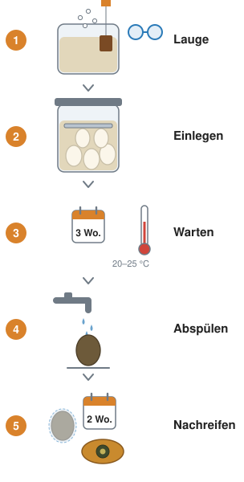

Hilfekarten
Erst selbst probieren. Jede Karte deckt ihre Hilfe in Stufen auf, so wenig wie möglich, so viel wie nötig.
Hilfe zu 1a
Hilfe zu 1b
Hilfe zu 2a
Hilfe zu 2b
Hilfe zu 3b
Hilfe zu 4a
Hilfe zu 4b
Hilfe zu 4c
Hilfe zu 5
Vertiefungen
★ = vertiefend · ★★ = anspruchsvoll. Die Ergebnisse gehören in Ihre Unterlagen; die Abbildungen und Werkzeuge helfen beim Denken, sie ersetzen keine Lösung.
Aussalzen im Labor
Biochemiker trennen Proteingemische, indem sie schrittweise Ammoniumsulfat zugeben: Aus Eiklar fallen die Globuline schon bei halber Sättigung aus, Ovalbumin erst bei höherer. Blutplasma wird dagegen mit kaltem Ethanol bei etwa −5 °C in Fraktionen getrennt (Cohn-Verfahren); so gewinnt man bis heute Albumin für Infusionen.
70 % gegen 96 %: eine offene Frage
Händedesinfektion mit 70- bis 80-prozentigem Ethanol wirkt auf viele Bakterien schneller als mit 96-prozentigem. Warum, ist nicht abschließend geklärt; in Lehrbüchern und Foren finden sich mehrere Erklärungen.
Pidan: Gel statt Flocken
Für Pidan werden Eier wochenlang in eine Paste aus Natriumcarbonat, Branntkalk, Salz und Wasser gelegt. Die entstehende Natronlauge dringt durch die Schale, der pH-Wert des Eiklars steigt bis etwa 12. Das Eiklar wird nicht flockig, sondern ein durchsichtiges Gel, das viel Wasser bindet. Früher gab man Bleioxid in die Paste, weil es das Gel fester macht; heute ist das verboten.
Blei im Körper
Blei-Ionen hemmen schon in kleinen Mengen das Enzym δ-Aminolävulinsäure-Dehydratase, das für den Aufbau des roten Blutfarbstoffs gebraucht wird. In seinem aktiven Zentrum ist ein Zn2+-Ion an drei Cysteinreste gebunden. Bei Bleivergiftungen gibt man Wirkstoffe mit zwei Thiolgruppen, z. B. DMSA (Dimercaptobernsteinsäure).
Pidan aus Hühnereiern
Zutaten: 6 frische Hühnereier ohne Risse, 1 L Wasser, 40 g Natriumhydroxid in Lebensmittelqualität (Laugenperlen für Brezeln, ergibt etwa 4-prozentige Lauge wie Brezellauge), 60 g Salz, 2 Beutel schwarzer Tee. Dazu ein Glas- oder Kunststoffgefäß mit Deckel (kein Aluminium), Schutzbrille, Handschuhe.
- Lauge ansetzen: Tee in 1 L heißem Wasser ziehen lassen, Salz lösen, abkühlen lassen. Erst dann mit Brille und Handschuhen die Laugenperlen portionsweise ins Wasser geben, nie umgekehrt. Die Lösung wird warm, wieder abkühlen lassen.
- Einlegen: Eier vorsichtig ins Gefäß legen, Lauge darübergießen, mit einem kleinen Teller beschweren, damit alle Eier bedeckt sind. Deckel drauf, Gefäß beschriften.
- Warten: etwa 3 Wochen bei Raumtemperatur (20–25 °C). Ab Tag 14 alle paar Tage ein Testei aufschlagen. Das Eiklar soll fest und bernsteinfarben sein. Bleiben die Eier zu lange in der Lauge, wird das Gel wieder flüssig.
- Abspülen: Eier mit Handschuhen herausnehmen, gründlich mit Wasser abspülen und trocknen.
- Nachreifen: jedes Ei in Frischhaltefolie wickeln und 1–2 Wochen bei Raumtemperatur lagern. Dann schälen und in Spalten schneiden.
Klassisch mit Sojasoße, etwas Sesamöl und Ingwer oder mit Seidentofu. Die alte Lauge mit Zitronensäure oder Essig neutralisieren und verdünnt wegschütten. Zu Hause nachmachen, nicht im Fachraum. Natriumhydroxid ist ätzend, außer Reichweite von Kindern lagern. Allergen: Ei.

Fragen und Antworten
Ist jede Ausflockung eine Denaturierung?
Nein. Flocken zeigen nur, dass sich Proteinmoleküle zusammengelagert haben und nicht mehr gelöst sind. Beim Aussalzen mit Ammoniumsulfat bleibt die Raumstruktur erhalten, und der Niederschlag löst sich in Wasser wieder. Umgekehrt kann ein Protein denaturiert sein, ohne auszuflocken, zum Beispiel in Natronlauge.
Warum sind Schwermetalle giftig, wenn doch auch Kochen Eiweiß denaturiert?
Gekochtes Eiweiß im Essen ist kein Problem, der Körper zerlegt es ohnehin. Schwermetall-Ionen wirken dagegen im Körper an Proteinen, die man zum Leben braucht: Sie binden fest an Thiolgruppen von Enzymen und blockieren sie. Schon wenige Ionen können viele Enzymmoleküle stilllegen.
Bleiben bei der Denaturierung wirklich alle Peptidbindungen ganz?
Bei den Auslösern dieser Stunde ja: Hitze, Ethanol, Schwermetall-Ionen und kurze Einwirkung von Lauge lösen Wechselwirkungen, spalten aber keine Peptidbindungen. Peptidbindungen werden erst bei einer Hydrolyse gespalten, also durch Enzyme oder durch starke Säure bzw. Base mit Hitze (Sitzung 08). Die Biuret-Reaktion an der Flocke passt dazu, beweist es allein aber nicht.